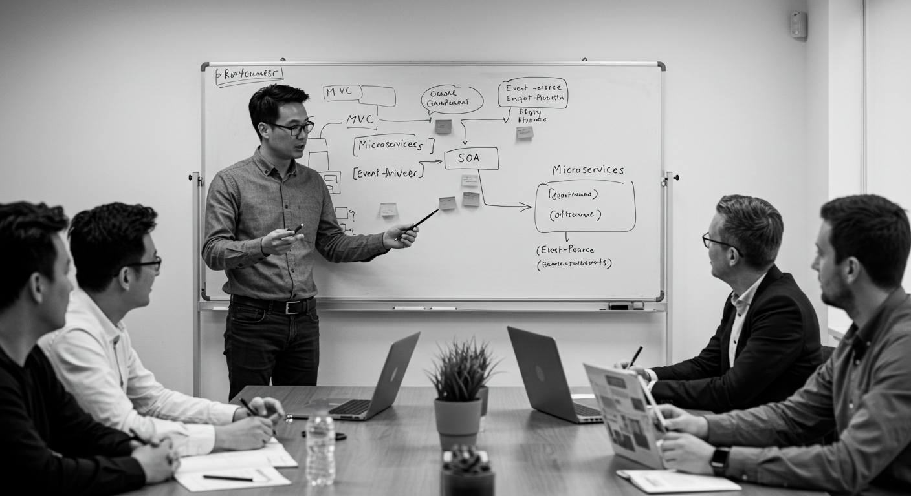

Arquitetura de Software
Introdução
A arquitetura de software constitui a espinha dorsal de qualquer sistema de informação, funcionando como a base estrutural que organiza os componentes, regula o fluxo de dados e define padrões de comunicação e interação. Ela não se limita à disposição física ou lógica do código, mas representa decisões estratégicas que impactam diretamente a escalabilidade, a manutenção e a evolução de um sistema ao longo do tempo. Sistemas sem uma arquitetura bem planejada tendem a se tornar difíceis de evoluir, apresentar maior incidência de falhas e gerar custos elevados de manutenção. Por outro lado, uma arquitetura sólida fornece previsibilidade, clareza e modularidade, permitindo que novas funcionalidades sejam adicionadas sem comprometer a integridade do sistema existente. Grandes empresas de tecnologia, como Amazon e Netflix, são exemplos de organizações que investem pesadamente em arquitetura para suportar sistemas complexos e de alta demanda, mostrando que a arquitetura não é apenas técnica, mas também estratégica.
Conceitos
O entendimento dos conceitos fundamentais da arquitetura de software é essencial para orientar decisões de projeto. Um dos princípios centrais é a separação de responsabilidades, geralmente implementada por meio de camadas ou módulos. Cada módulo deve ter uma função bem definida, evitando que alterações em uma parte do sistema provoquem efeitos colaterais inesperados em outras partes. O acoplamento e a coesão são métricas críticas de qualidade arquitetural: sistemas com baixo acoplamento apresentam menos dependências entre módulos, tornando mais fácil substituir, atualizar ou testar partes isoladas, enquanto a alta coesão garante que cada módulo execute atividades relacionadas de forma concentrada. Além disso, a escalabilidade permite que sistemas suportem volumes crescentes de usuários e dados sem perda de desempenho, e a manutenibilidade assegura que alterações sejam realizadas de forma segura e eficiente, mantendo a integridade do software.
Padrões de Arquitetura
O uso de padrões arquiteturais fornece soluções consagradas para problemas recorrentes em sistemas
complexos.
A arquitetura em camadas organiza o sistema em níveis distintos, como apresentação, lógica de negócio e
persistência de dados, facilitando manutenção, testes e evolução.
O padrão MVC amplia essa separação, dividindo o sistema em modelo (dados e regras de negócio), visão
(interface com o usuário)
e controlador (gestão do fluxo), permitindo desenvolvimento ágil e modular.
Microsserviços fragmentam o sistema em serviços independentes, cada um responsável por uma funcionalidade
específica,
aumentando a escalabilidade e a resiliência, como no caso da
Netflix.
SOA orienta a integração de sistemas heterogêneos via serviços padronizados, útil em empresas de
telecomunicações para integrar sistemas legados sem grandes reescritas.
Arquiteturas orientadas a eventos criam sistemas reativos que respondem a notificações em tempo real,
muito úteis em e-commerce e monitoramento financeiro.
Cada padrão apresenta vantagens e limitações, sendo a escolha dependente da necessidade do projeto e
da complexidade do sistema.
Escolha de Arquitetura
Decidir qual arquitetura adotar envolve equilibrar requisitos técnicos e de negócio. É necessário avaliar fatores como complexidade do sistema, perfil da equipe, prazo e orçamento, além do ambiente de implantação. Uma startup que deseja lançar rapidamente um produto pode optar por uma arquitetura monolítica inicialmente, migrando para microsserviços à medida que o sistema cresce. Sistemas de grande porte e alta disponibilidade, como plataformas financeiras, exigem arquiteturas distribuídas desde o início para garantir escalabilidade e resiliência. Além disso, é essencial considerar aspectos não funcionais como segurança, confiabilidade e desempenho. Uma decisão inadequada pode gerar custos elevados, retrabalho e dificuldades para atender novas demandas, reforçando que a arquitetura é um fator crítico de sucesso estratégico.

Tendências
O campo da arquitetura de software evolui constantemente, refletindo mudanças na tecnologia e nas demandas de negócio. Microsserviços e containers, como Docker e Kubernetes, permitem implantações ágeis e isoladas, aumentando a resiliência do sistema. Serverless e Function-as-a-Service (FaaS) eliminam a necessidade de gerenciar infraestrutura, permitindo que a equipe foque na lógica de negócio. Arquiteturas orientadas a eventos e Edge Computing se destacam em sistemas que exigem processamento próximo à origem dos dados, como IoT e monitoramento de tráfego em tempo real. Integração via APIs padronizadas facilita comunicação entre sistemas heterogêneos, enquanto a inteligência artificial pode apoiar decisões arquiteturais, otimizando desempenho, balanceando carga e prevendo crescimento. Essas tendências tornam os sistemas mais adaptáveis, inteligentes e preparados para o futuro.
Conclusão
A arquitetura de software é um elemento estratégico que determina a qualidade, a sustentabilidade e a longevidade de qualquer sistema digital. O domínio profundo de conceitos como acoplamento, coesão, escalabilidade e manutenibilidade, aliado ao uso de padrões consagrados e à observação de tendências emergentes, permite criar sistemas robustos, adaptáveis e eficientes. Um projeto arquitetural bem fundamentado garante que o software seja capaz de evoluir com o tempo, absorver novas tecnologias, atender às demandas de negócio e oferecer experiências consistentes e confiáveis aos usuários. Investir em uma arquitetura sólida é, portanto, uma decisão essencial para o sucesso de qualquer iniciativa tecnológica.
Referências
- Bass, L.; Clements, P.; Kazman, R. Software Architecture in Practice. 3ª ed. Addison-Wesley, 2013.
- Fowler, M. Patterns of Enterprise Application Architecture. Addison-Wesley, 2002.
- Richards, M.; Ford, N. Fundamentals of Software Architecture. O'Reilly Media, 2020.
- Garlan, D.; Shaw, M. An Introduction to Software Architecture. Carnegie Mellon University, 1994.
- Hohpe, G.; Woolf, B. Enterprise Integration Patterns: Designing, Building, and Deploying Messaging Solutions. Addison-Wesley, 2003.
- Microsoft. Guia de Arquitetura de Software. Disponível em: learn.microsoft.com. Acesso em: set. 2025.
- Red Hat. Modern Application Architecture for Enterprises. Disponível em: redhat.com. Acesso em: set. 2025.
- IEEE. Recommended Practice for Architectural Description of Software-Intensive Systems (IEEE 1471-2000). Institute of Electrical and Electronics Engineers, 2000.